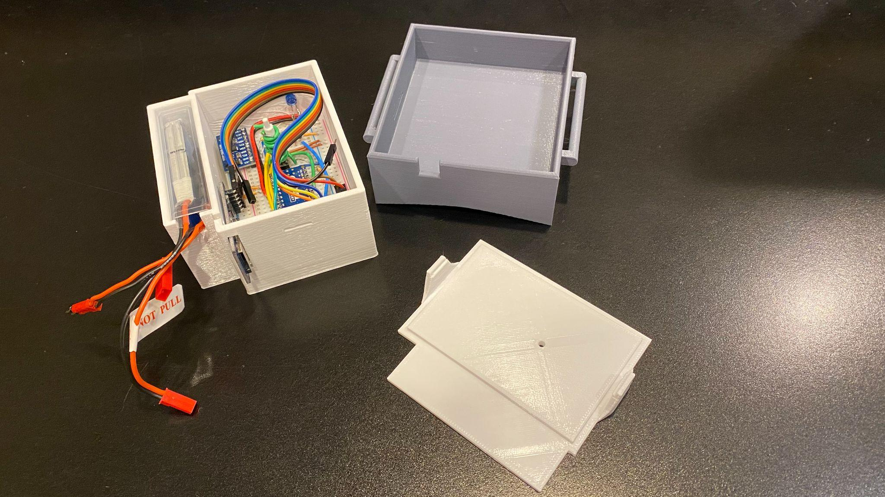

PvNet Canine Gait Analysis Sensor
Wearable inertial sensing and data logging for early veterinary gait-abnormality screening
Project Overview
This project explored a lower-cost path toward early detection of abnormal gait in dogs using a wearable motion-tracking device. The concept was to capture multi-axis movement data directly from a dog during walking trials, then use that data to support downstream machine-learning analysis and 3D visualization for veterinary insight.
The prototype combined embedded sensing, onboard logging, and physical packaging into a harness-mounted system designed to be practical for repeated testing. Healthy-dog baseline data was collected as an early step toward distinguishing normal and abnormal stride behavior.
Project At a Glance
Core Goal
- Support earlier and more affordable gait-abnormality screening
- Collect wearable motion data for machine-learning analysis
- Help identify which leg or motion pattern may be irregular
System Components
- Arduino Nano embedded controller
- MPU-9250 inertial sensing for multi-axis motion capture
- MicroSD logging, battery power, and harness-mounted packaging
Development Focus
- Wearable hardware integration
- Reliable field data collection workflow
- Preparation for ML-based gait classification and visualization
Problem Framing
Traditional veterinary diagnostics can require repeated appointments, imaging, specialist referrals, and significant cost before a gait issue is clearly characterized. This concept aimed to move part of that detection process earlier by capturing objective movement data with a lightweight wearable platform.
Rather than replacing veterinary expertise, the system was intended to provide another layer of evidence: motion recordings from healthy and potentially unhealthy stride patterns, paired with software tools that could help flag deviations and visualize likely causes.
Embedded Device Workflow
The device was powered by a 450 mAh battery and 5 V step-down converter feeding an Arduino Nano-based electronics stack. After initialization, a button on the enclosure started and stopped motion capture while an LED indicated active recording.
Sensor data from the MPU-9250 was streamed to the microcontroller and written to a MicroSD card as accelerometer, gyroscope, and magnetometer measurements. The workflow was intentionally simple so the unit could be deployed repeatedly during live walking trials with minimal operator overhead.
Key Technical Objectives
- Collect enough gait data for a machine-learning model to separate healthy and unhealthy motion behavior
- Determine which leg is most likely contributing to the abnormal motion pattern
- Flag irregularities early enough to support earlier intervention
- Feed recorded data into visualization workflows for easier interpretation
- Build a rugged enough prototype to support repeated field testing on live subjects
- Establish a baseline dataset from healthy dogs for later comparison
Prototype Hardware
The prototype used accessible embedded hardware and rapid fabrication methods to keep iteration fast. The enclosure, button assembly, wiring, logging hardware, and inertial sensor package were combined into a compact wearable unit that could be strapped to the dog's back using a harness.
Core Electronics
- Arduino Nano
- MPU-9250 / MPU-6500 IMU
- MicroSD card adapter and storage
Power and Packaging
- 450 mAh battery pack
- 5 V UBEC step-down converter
- 3D printed button and compact enclosure elements
Integration Details
- On-board wiring and breadboard prototyping
- Status LED and recording control button
- Harness-mounted placement for repeatable motion capture
Testing and Data Collection
Early validation used two healthy dogs, a 5-year-old Labrador retriever and a 7-year-old pitbull, to capture baseline motion recordings. Those trials were used to verify device operation, logging reliability, and the feasibility of building a comparative dataset for later model development.
The broader plan was to pass recorded inertial data into a machine-learning system that could identify deviations from healthy gait patterns, then visualize those potential abnormalities through a 3D animation workflow that would make the underlying issue easier to interpret.
Project Gallery
The images below were extracted from the original project document and added directly to this site. They capture the prototype hardware, assembly details, and final wearable form factor from the original internship materials.
Original Project Documents
The original internship abstract is available below in both PDF and Word format. I also embedded the PDF so the document can be reviewed directly from the portfolio page.